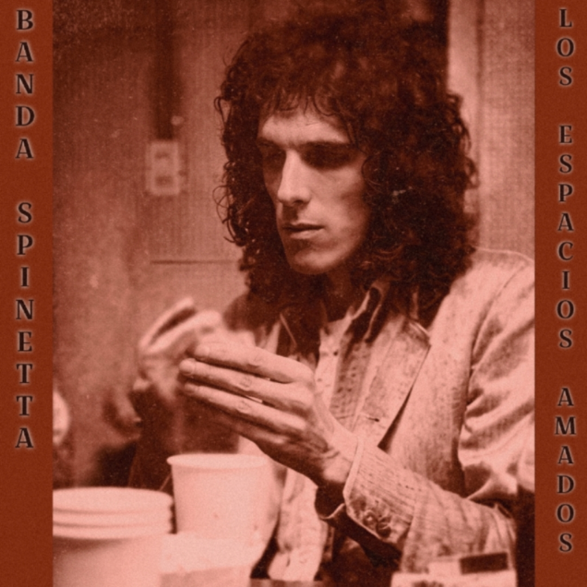

1977/1978 - Argentina

El material conocido como “Los Espacios Amados” corresponde a una serie de grabaciones en vivo de Luis Alberto Spinetta registradas principalmente entre 1977 y 1978, durante un período de transición posterior a Invisible. En esos años, Spinetta orientó su música hacia la fusión entre rock y jazz, con composiciones extensas y gran espacio para la improvisación.
Este repertorio formaba parte de un proyecto discográfico que nunca llegó a editarse oficialmente. Se trata de un compilado de grabaciones informales preservadas por aficionados, que capturan una faceta poco documentada del "Flaco", marcada por influencias del jazz-rock internacional y piezas que nunca fueron grabadas en estudio.
La portada de esta edición fue recreada con inteligencia artificial, buscando dar una identidad visual a este "álbum perdido" de la discografía no oficial.
Material difundido con fines culturales y de preservación histórica.